| Jon Mikel Aramburu |
Defensa / Lateral derecho |
23 |
Jon Mikel Aramburu Mejías (23/07/2002). Lateral derecho formado en Venezuela que se consolidó en la Real Sociedad (España) y ha debutado con la selección absoluta. |
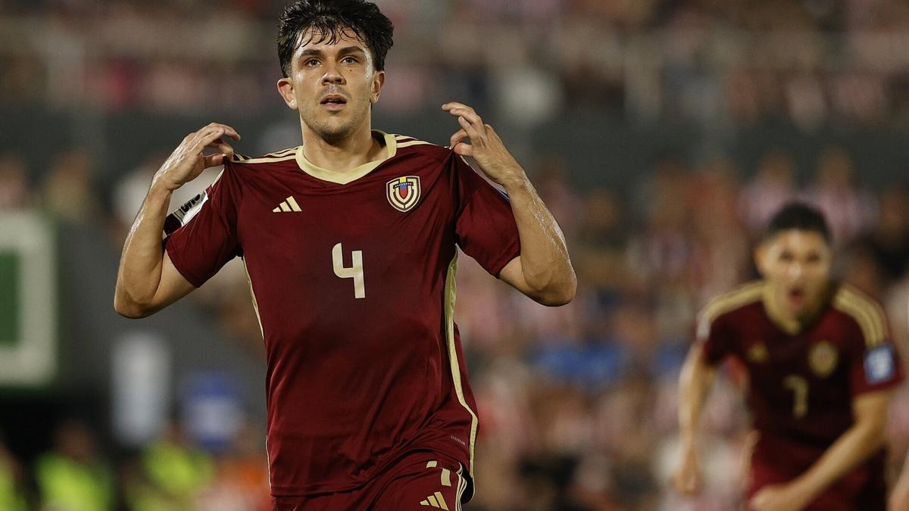 |
| Eduard Bello |
Extremo / Delantero |
30 |
Eduard Alexander Bello Gil (20/08/1995). Extremo venezolano con experiencia en ligas de Chile, México y Ecuador; internacional con la Vinotinto. |
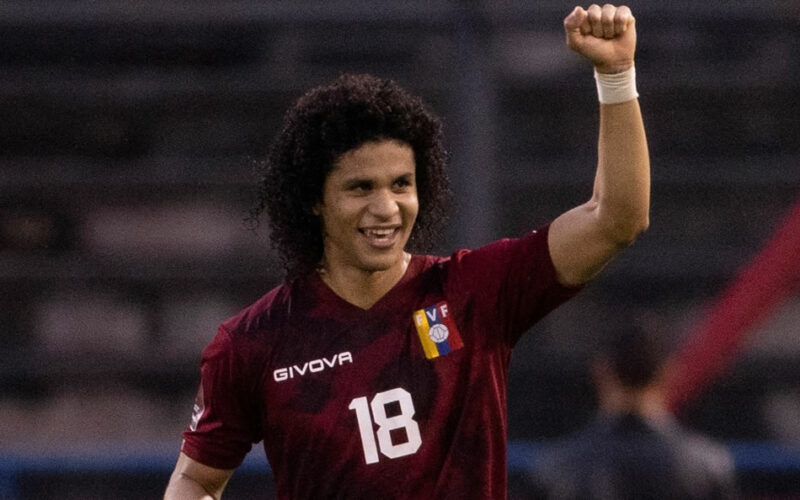 |
| Jefferson Savarino |
Delantero / Extremo |
28 |
Jefferson David Savarino (11/11/1996). Jugador ofensivo que ha militado en clubes sudamericanos y brasileños; referente en ataque de la selección. |
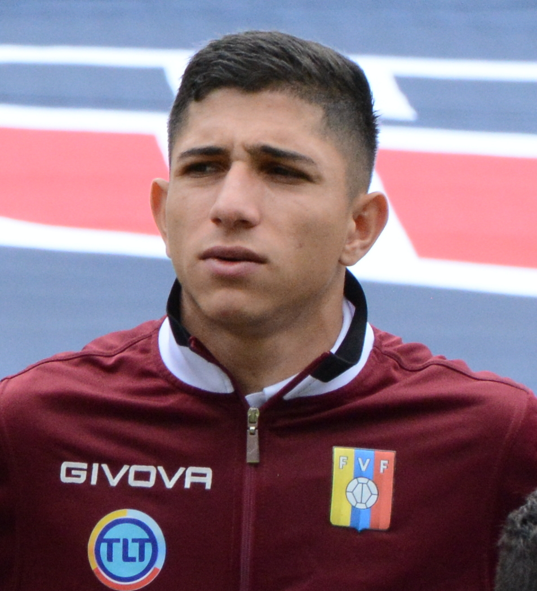 |
| José Andrés Martínez |
Mediocentro / Mediocampista defensivo |
31 |
José Andrés Martínez (07/08/1994). Mediocentro de contención, muy sólido en recuperación y distribución; internacional por Venezuela. |
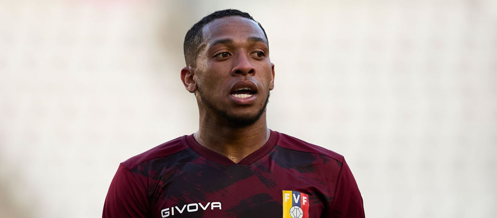 |
| Josef Martínez |
Delantero |
32 |
Josef Alexander Martínez (19/05/1993). Delantero centro goleador, histórico en la MLS y referente ofensivo de la Vinotinto. |
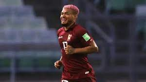 |
| Darwin Machís |
Extremo / Delantero |
32 |
Darwin Daniel Machís (07/02/1993). Extremo incisivo, con recorrido en ligas de Europa y Sudamérica; habitual convocado de la selección. |
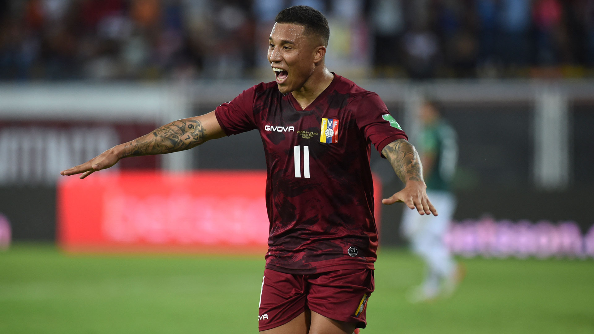 |
| Rafael Romo |
Portero |
35 |
Rafael Enrique Romo Pérez (25/02/1990). Portero con experiencia en varios clubes de Sudamérica y Europa; ha sido llamado con la Vinotinto. |
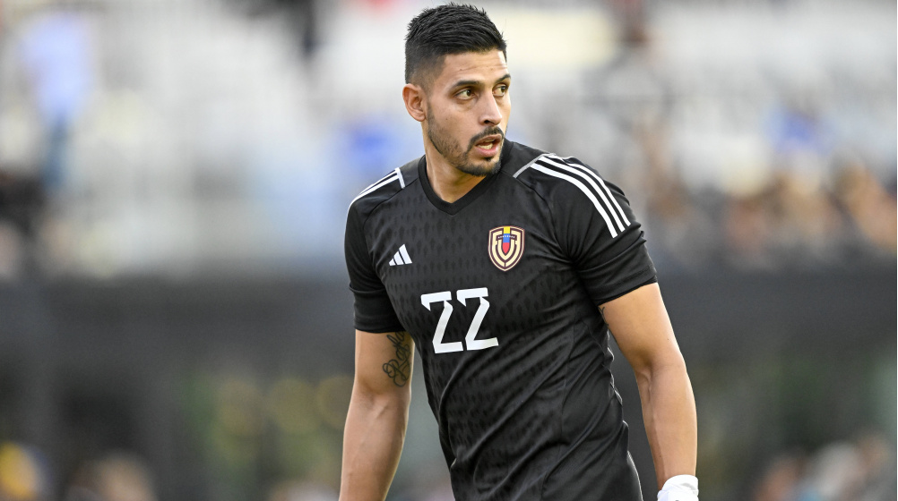 |
| Salomón Rondón |
Delantero |
36 |
José Salomón Rondón (16/09/1989). Delantero centro, máximo goleador histórico de Venezuela; larga carrera en Europa y actualmente activo en clubes profesionales. |
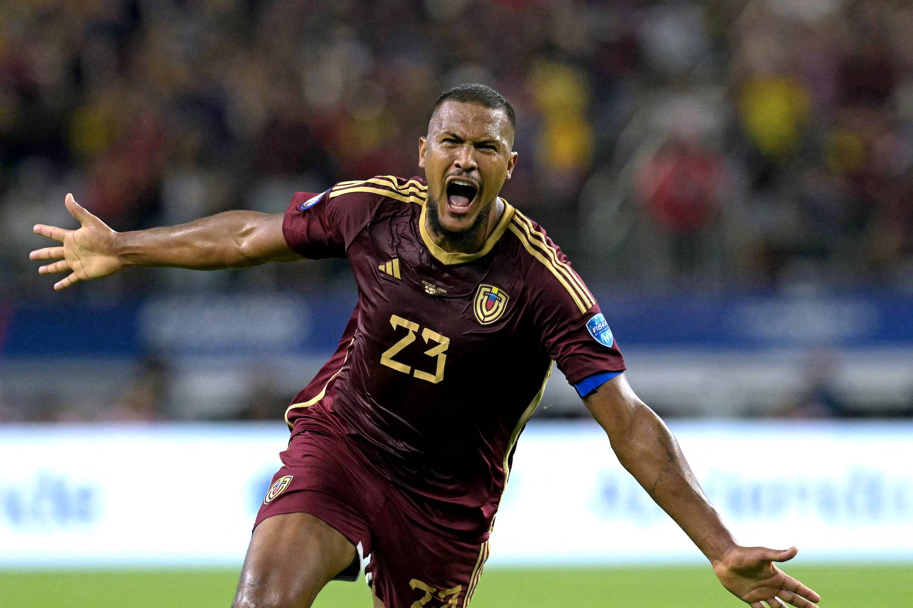 |
| Yeferson Soteldo |
Extremo / Mediapunta |
28 |
Yeferson Soteldo (30/06/1997). Extremo creativo, conocido por su regate y capacidad de asistencia; ha jugado en clubes de Brasil y otras ligas. |
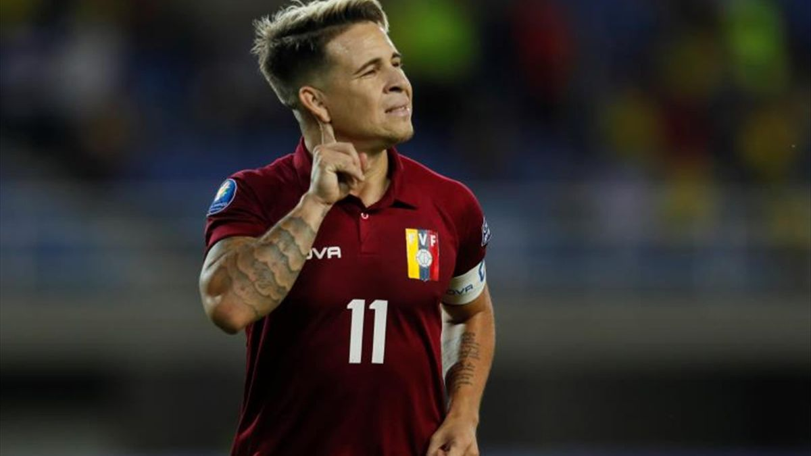 |
| Tomás Rincón |
Mediocentro defensivo / Capitán |
37 |
Tomás Eduardo Rincón Hernández (13/01/1988). Mediocentro con gran físico y liderazgo; capitán histórico de la selección venezolana. |
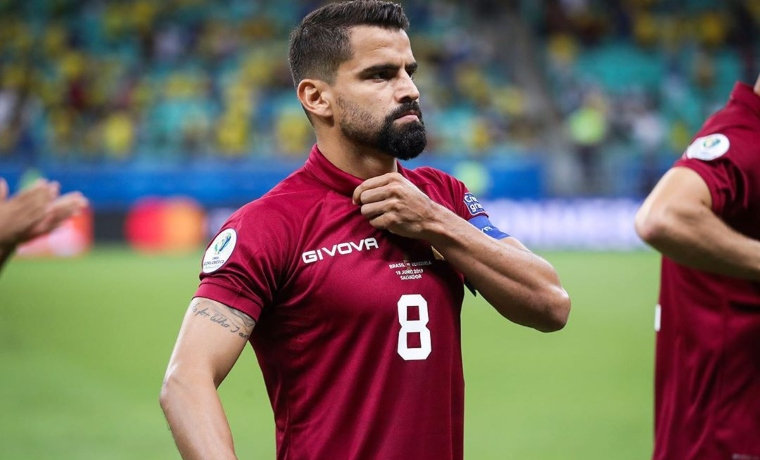 |
| Telasco Segovia |
Mediocampista |
22 |
Telasco José Segovia Pérez (02/04/2003). Centrocampista joven con proyección, fichado recientemente por clubes en ligas mayores y con apariciones en la selección. |
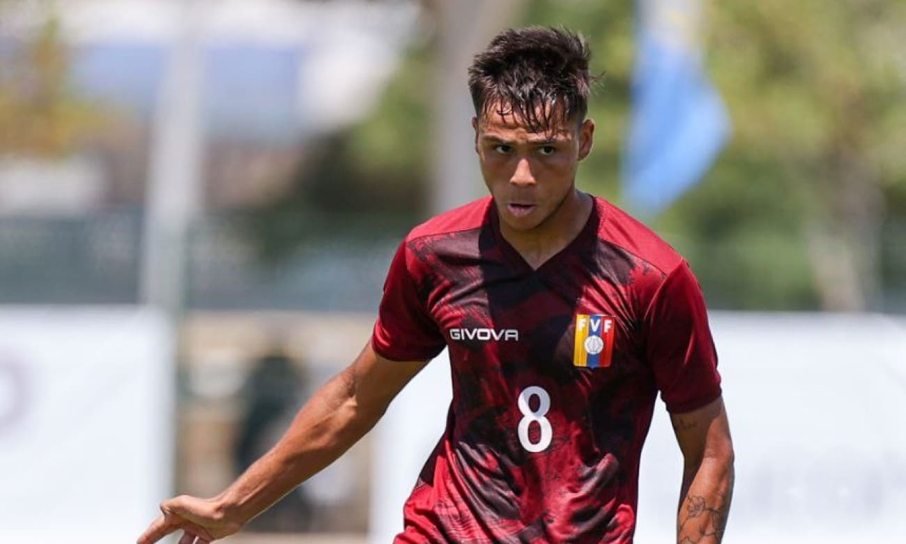 |
| Yangel Herrera |
Mediocentro / Mediocampista |
27 |
Yangel Clemente Herrera Ravelo (07/01/1998). Mediocentro con despliegue físico que ha jugado en Europa y en la selección absoluta. |
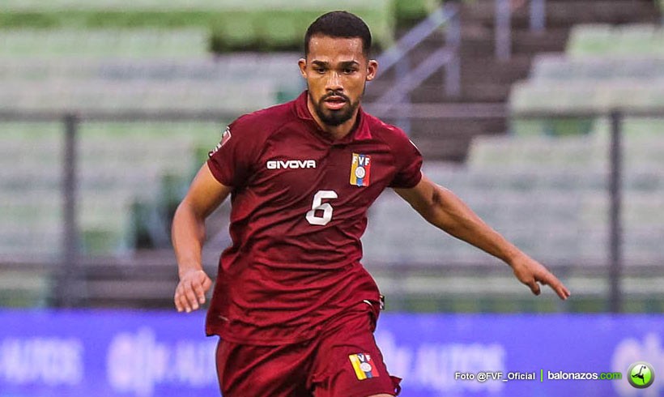 |